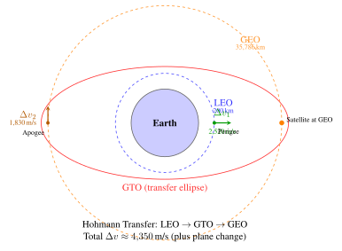

Chapter 4: Launch Systems and Mission Design¶
4.1 Introduction¶
Modern launch vehicles deliver payloads from Earth’s surface to precise orbits with extraordinary reliability. The space launch market in 2023 comprised more than 220 individual orbital attempts, the highest annual cadence in history. SpaceX commands roughly 60% of global market share through the reusability of the Falcon 9 family, a paradigm that has fundamentally restructured launch economics. Launch cost has plummeted from $65,000 kg\(-1\) for the Space Shuttle to roughly $2,700 kg\(-1\) for a reused Falcon 9, and SpaceX targets $100 kg\(-1\) with the fully reusable Starship system.
Chapter Scope This chapter covers the physics of rocket propulsion, the characteristics of all major operational launch vehicles, launch site selection, mission-design \(\Delta v\) budgets, reusable launch vehicle (RLV) technology, environmental loads on payloads, and emerging trends that will shape the industry through the 2030s. Readers requiring only high-level vehicle data may focus on Sections 4.3 and 4.6; those designing launch-vehicle interfaces should study all sections.
The evolution of launch capability has tracked closely with national strategic priorities and, more recently, private investment. Three eras are distinguishable. First, the cold-war era (1957–1990) was driven by government military and civil space programmes with cost largely irrelevant. Second, the commercial geostationary satellite era (1990–2010) introduced competition among Arianespace, ILS/Proton and later Sea Launch, reducing GTO prices to roughly $80M per mission. Third, the current commercial-reusability era (2010–present) is defined by SpaceX’s systematic reduction of launch costs through hardware reuse.
4.2 Rocket Propulsion Fundamentals¶
4.2.1 Tsiolkovsky Rocket Equation¶
The governing equation of rocketry follows directly from Newton’s second law applied to a variable-mass system. If a rocket of instantaneous mass \(m\) ejects propellant at relative velocity \(v_e\) (the effective exhaust velocity), the equation of motion in the absence of external forces is
Integrating from initial mass \(m_0\) (full propellant load) to final mass \(m_f\) (dry mass plus payload) yields the celebrated Tsiolkovsky rocket equation:
where \(I_{\rm sp}\) is specific impulse in seconds, \(g_0 = 9.80665\) m s\(-2\) is the standard acceleration of gravity, \(m_0\) is the initial total (wet) mass, and \(m_f\) is the final (dry) mass.
The mass ratio \(R = m_0/m_f\) can be written as
For a mission requiring \(\Delta v = 9{,}300\) m/s and using a propellant with \(I_{\rm sp} = 350\) s, the mass ratio is \(R = e^{9300/(350 \times 9.807)} \approx 15.3\), meaning that over 93% of the vehicle’s initial mass must be propellant.
Payload fraction.
If the vehicle structural mass is characterised by structural coefficient \(\varepsilon = m_{\rm struct}/(m_{\rm struct} + m_{\rm prop})\), the payload fraction is
A high \(I_{\rm sp}\) reduces \(R\) and thus increases \(\lambda\). Structural improvements (higher specific-strength materials) reduce \(\varepsilon\) and also improve payload fraction; state-of-the-art launch vehicles achieve \(\varepsilon \approx 0.06\)–\(0.10\).
4.2.2 Thrust and Specific Impulse¶
Thrust arises from the combined momentum flux and pressure-area force acting at the nozzle exit plane:
where \(\dot{m}\) is propellant mass flow rate, \(p_e\) is exit-plane pressure, \(p_a\) is ambient pressure, and \(A_e\) is nozzle exit area. At optimal expansion, \(p_e = p_a\) and \(F = \dot{m}\,v_e\), giving specific impulse \(I_{\rm sp} = v_e / g_0\).
Two dimensionless parameters characterise nozzle performance. The thrust coefficient
relates thrust to chamber pressure \(p_c\) and throat area \(A_t\). The characteristic velocity
characterises the combustion process independent of nozzle geometry. These are related by \(I_{\rm sp} = C_F c^* / g_0\).
Typical sea-level \(C_F \approx 1.3\)–\(1.6\); typical \(c^*\) values are 1,500–1,800 m s\(-1\) for high-performance cryogenic propellants. Nozzle area ratio \(\varepsilon_n = A_e/A_t\) is optimised to match ambient pressure: high area ratios (50:1 to 200:1) for vacuum operation, low ratios (8:1 to 12:1) at sea level.
4.2.3 Staging¶
For an \(N\)-stage rocket with identical stages each having mass ratio \(R_{\rm stage}\) and specific impulse \(I_{\rm sp}\), the total velocity increment is
This exponential stacking is why staging enables orbital flight that would be impossible with a single stage. The two-stage payload fraction (equal stages) satisfies \(\lambda_2 = \lambda_1^2\); a first stage with \(\lambda_1 = 20\%\) yields \(\lambda_2 \approx 4\%\) overall, which matches the Falcon 9 performance to LEO.
Single-Stage to Orbit SSTO is theoretically possible but requires \(\varepsilon < 0.09\) and \(I_{\rm sp} > 430\) s, achievable only with LOX/LH\(_2\) and advanced composite structures. No operational SSTO vehicle has ever flown; Starship achieves SSTO-like performance by refuelling on orbit.
Staging penalties include inter-stage mass, separation mechanisms, and the complexity of multiple engine starts. The optimal propellant split between stages depends on \(I_{\rm sp}\) of each stage, atmospheric density profile, and target orbit. For Falcon 9, roughly 70% of propellant resides in the first stage and 30% in the second.
4.2.4 Gravity and Drag Losses¶
The effective \(\Delta v\) required to reach orbit exceeds the ideal orbital velocity because of gravity and aerodynamic drag acting during ascent. The total \(\Delta v\) budget is
Gravity loss is
where \(\gamma\) is the flight path angle. For a purely vertical ascent, \(\gamma = 90\degree{}\) throughout and gravity loss approaches \(\sim\)1,300 m s\(-1\). An optimised pitch-over programme (gravity turn) reduces this to \(\sim\)150 m s\(-1\) by rotating the trajectory toward horizontal rapidly. Drag loss is a modest \(\sim\)50 m s\(-1\) for typical ascent trajectories because peak dynamic pressure (\(q_{\rm max}\)) of \(\sim\)30–50 kPa occurs at 12–15 km altitude where the vehicle is still subsonic or transonic.
Steering loss (\(\Delta v_{\rm steer} \approx\) 50–100 m s\(-1\)) arises from azimuth dog-legs to avoid populated areas or to reach the correct orbital plane.
4.2.5 Propellant Performance Comparison¶
Table 4.1 summarises the performance of the principal propellant combinations used in orbital launch vehicles. Key trade-offs are \(I_{\rm sp}\) (exhaust velocity) versus bulk density \(\rho\) (which determines tank volume and vehicle size) and storability (which affects pre-launch operations).
| Propellant | Type | \(I_{\rm sp}\) (s) | \(\rho\) (kg/m\(^3\)) | \(T_c\) (K) | Notes |
|---|---|---|---|---|---|
| LOX/LH\(_2\) | Cryogenic | 450 | 290 | 3535 | Highest \(I_{\rm sp}\), low density |
| LOX/RP-1 | Cryogenic/liquid | 358 | 1021 | 3670 | Dense, workhorse |
| LOX/CH\(_4\) | Cryogenic | 363 | 828 | 3530 | Starship, reusable |
| N\(_2\)O\(_4\)/UDMH | Storable | 320 | 1180 | 3450 | Hypergolic, toxic |
| N\(_2\)O\(_4\)/MMH | Storable | 340 | 1100 | 3370 | Hypergolic, spacecraft |
| HTPB/AP | Solid | 280 | 1760 | 3400 | Simple, non-restartable |
LOX/LH\(_2\) offers the highest \(I_{\rm sp}\) but requires cryogenic storage at \(-253\)C (LH\(_2\)) and \(-183\)C (LOX), and the very low density of liquid hydrogen (71 kg m\(-3\)) demands large, heavy tanks. LOX/RP-1 (kerosene) is denser and easier to handle while still requiring LOX cryo-conditioning; it dominates first stages due to its density advantage. Methane (LOX/CH\(_4\)) has emerged as the propellant of choice for next-generation reusable engines because it produces minimal carbon deposition, enabling quick engine turnaround. Storable hypergolics (N\(_2\)O\(_4\)/MMH) remain standard for spacecraft propulsion and some upper stages due to indefinite storability.
4.3 Major Launch Vehicles¶
4.3.1 SpaceX Falcon 9 Block 5¶
The Falcon 9 Block 5 is the world’s most-flown orbital launch vehicle, with several hundred flights by the end of 2024. Its principal design objective was cost reduction through first-stage reuse; Block 5 is the final incremental design, optimised for rapid refurbishment and multiple reflights.
-
First stage: 9\(\times\) Merlin 1D engines, LOX/RP-1, sea-level thrust 7,607 kN, \(I_{\rm sp}\) 311 s (SL) / 348 s (vac). Throttleable to 40% for landing.
-
Second stage: 1\(\times\) Merlin Vacuum, 934 kN, \(I_{\rm sp}\) 382 s, single restart capable.
-
Payload: 22,800 kg LEO expendable; 17,400 kg LEO with RTLS; 8,300 kg GTO reusable.
-
Reuse: Grid fins (Ti), landing legs (CFRP), ASDS droneship or RTLS; B1058 flew 19 times by 2024.
-
Cost: $67M standard; turnaround 20–40 days; refurbishment cost \(\sim\)$3–5M vs $35–40M new.
Falcon 9 Landing Guidance Three-burn recovery sequence: (1) Boostback burn reverses horizontal velocity; (2) Entry burn at 70 km reduces speed from 5,500 to 2,000 m/s; (3) Landing burn from \(\sim\)400 m fires single engine to throttle to TWR just above 1. Grid fins provide pitch/yaw/roll authority throughout.
Falcon Heavy consists of three Falcon 9 boosters (two side cores, one centre core with strengthened octaweb) plus a Falcon 9 second stage. Performance: 63,800 kg LEO (expendable), 26,700 kg GTO with reusable side cores, 16,800 kg to Mars. Payload: $97M per launch.
4.3.2 SpaceX Starship / Super Heavy¶
Starship is the largest launch system ever developed, designed from the outset for complete reusability of both stages.
-
Super Heavy: 33\(\times\) Raptor 2 engines, LOX/CH\(_4\), sea-level thrust 74 MN (highest ever), full-flow staged combustion at \(\sim\)300 bar chamber pressure.
-
Starship: 6\(\times\) Raptor (3 SL + 3 vacuum), \(I_{\rm sp, vac}\) 380 s, 1,000 m\(^3\) payload volume, 9 m diameter.
-
Payload: 100–150 t LEO (reusable); 250 t (expendable); NASA HLS variant for Artemis.
-
Reuse: Booster caught by Mechazilla tower arms (first success Oct 2024); Starship belly-flop reentry + catch planned.
-
Target cost: $100/kg to LEO.
4.3.3 United Launch Alliance¶
Atlas V.
Atlas V uses a Russian RD-180 first-stage engine (LOX/RP-1, 4,152 kN, dual chambers) and a Centaur upper stage (RL-10, LOX/LH\(_2\), 99 kN, restartable, \(I_{\rm sp}\) 450 s). Payload: 9,750–18,850 kg LEO; 100 consecutive successes before retirement.
Vulcan Centaur.
Vulcan Centaur is ULA’s next-generation vehicle, first flown January 2024. Two BE-4 engines (Blue Origin, LOX/LNG, 2,400 kN each) power the first stage; Centaur V uses two RL-10C-3 (220 kN combined). Payload: 27,200 kg LEO; up to 6\(\times\) GEM-63XL SRBs.
4.3.4 Ariane 6¶
Core: Vulcain 2.1 (LOX/LH\(_2\), 1,370 kN) + Vinci upper stage (65 kN, restartable, \(I_{\rm sp}\) 457 s).
-
Ariane 62: 2\(\times\) P120C SRBs; 10,350 kg LEO; cost \(\approx\)EUR 75M.
-
Ariane 64: 4\(\times\) P120C; 21,650 kg LEO; 11,500 kg GTO; cost \(\approx\)EUR 115M.
First flight: July 2024.
4.3.5 Russian Vehicles¶
Soyuz-2.1b: R-7 heritage, LOX/kerosene, 4 strap-on boosters + core, 8,200 kg LEO, Fregat upper stage. Primary crew/cargo vehicle for Russian civil and commercial missions.
Angara A5: LOX/kerosene modular URM-1 architecture (RD-191, 1,920 kN per module), 37,500 kg LEO, replacing Proton. Angara A5M with KVTK cryogenic upper stage planned.
4.3.6 Chinese Launch Vehicles¶
Long March 5: LOX/kerosene core + LOX/LH\(_2\) upper + 4 strap-on boosters, 25,000 kg LEO, 14,000 kg GTO. Backbone for China space station and deep-space missions. Launches from Wenchang (19.5N).
Long March 7: LOX/kerosene, 13,500 kg LEO, crew cargo (Tianzhou).
Zhuque-2 (LandSpace): First commercial methalox rocket; 6,000 kg LEO; first successful orbital flight July 2023, demonstrating China’s vibrant commercial launch sector.
4.3.7 Small Launch Vehicles¶
Rocket Lab Electron: 9\(\times\) Rutherford engines (electric-pump-fed, LOX/RP-1, 25 kN each), a few hundred kg to LEO, roughly $7–8M per launch. First-stage helicopter catch attempted; Neutron (about 13,000 kg to LEO, reusable) is in development.
Firefly Alpha: 4\(\times\) Reaver (LOX/RP-1) + Lightning upper stage, about 1,000 kg to LEO; has reached orbit since 2022.
ISRO SSLV: 3 solid stages + velocity trimming module, 500 kg SSO; rapid integration 72 hours.
| Vehicle | Country | LEO (t) | GTO (t) | Cost ($M) | Reusability |
|---|---|---|---|---|---|
| Falcon 9 Block 5 | USA | 22.8 | 8.3 | 67 | 1st stage + fairing |
| Falcon Heavy | USA | 63.8 | 26.7 | 97 | Side cores + fairing |
| Starship | USA | 150 | 21 | \(<\)10 (target) | Full reuse |
| Vulcan Centaur | USA | 27.2 | 6.4 | 110 | Expendable (SMART) |
| Ariane 64 | Europe | 21.6 | 11.5 | 115 | Expendable |
| Long March 5 | China | 25.0 | 14.0 | 70 | Expendable |
| Soyuz-2.1b | Russia | 8.2 | 3.0 | 48 | Expendable |
| Angara A5 | Russia | 37.5 | 7.5 | 100 | Expendable |
| H3 | Japan | 6.5 | 4.0 | 65 | Expendable |
| GSLV Mk III | India | 10.0 | 4.0 | 60 | Expendable |
| Rocket Lab Electron | USA/NZ | 0.30 | – | 7.5 | Partial (1st stage) |
| Firefly Alpha | USA | 1.03 | – | 15 | Expendable |
4.4 Reusable Launch Vehicle Technologies¶
4.4.1 Economic Case for Reusability¶
The economic argument for reuse is straightforward. If a booster costing \(C_{\rm booster}\) can fly \(N_{\rm flights}\) times with refurbishment cost \(C_{\rm refurb}\) per flight, total mission cost is
For Falcon 9 with \(C_{\rm booster} = \$35\)M, \(C_{\rm refurb} = \$4\)M, \(C_{\rm prop} = \$0.3\)M, and \(C_{\rm ops} = \$5\)M:
-
\(N = 1\) (expendable): $44.3M
-
\(N = 5\): $16.3M
-
\(N = 10\): $12.8M
-
\(N = 20\): $11.0M
Marginal returns diminish beyond \(N \approx 10\) as fixed costs dominate. Starship targets \(C_{\rm booster} < \$10\)M via manufacturing at scale (one set of Raptor engines produced per day at the SpaceX factory).
4.4.2 First-Stage Recovery Hardware¶
SpaceX recovery hardware:
-
Grid fins: Titanium deployable aerodynamic surfaces, 4\(\times\) fins provide pitch/yaw/roll during hypersonic and subsonic descent; deploy at staging, stow after landing. Titanium withstands \(\sim\)800C reentry heating without active cooling.
-
Landing legs: 4\(\times\) carbon-fibre/aluminium honeycomb legs, deploy at \(\sim\)400 m altitude pneumatically, absorb landing impulse; each leg \(\sim\)10 m long when deployed.
-
Propellant margin: 5–8% reserved for boostback + entry + landing burns, directly reducing payload to orbit by 30–35% versus expendable.
-
Drone Ships: ASDS equipped with GPS-guided station-keeping thrusters; accommodates offshore landings up to 2,500 km downrange within \(\pm\)3 m accuracy.
4.4.3 Fairing Recovery¶
Payload fairing ($6M value): steerable parachutes guide fairing halves to the recovery ship. Originally net-catch by vessels Ms. Tree / Ms. Chief; since 2021 simplified water recovery with fresh-water wash and drying. Reuse lowers cost by \(\sim\)$3M per mission. Reflown fairings are structurally identical to new ones.
4.4.4 Winged and Parachute Recovery¶
Sierra Space Dream Chaser lands on a conventional runway as a lifting body, offering aircraft-like horizontal landing for payload recovery without parachute shock loads. New Glenn (Blue Origin, first flight January 2025) is designed to recover its first stage propulsively on a ship. Rocket Lab pursues helicopter-catch of the Electron first stage on parachute.
4.5 Launch Site Selection¶
4.5.1 Geographic and Orbital Considerations¶
Launch site latitude \(\phi\) directly determines the minimum inclination achievable without a plane-change manoeuvre: \(i_{\rm min} = \phi\) (launching due east). The surface velocity boost from Earth’s rotation is
where \(\omega_E = 7.292 \times 10^{-5}\) rad s\(-1\) and \(R_E = 6{,}378\) km. Kourou (5.2N) receives \(v_{\rm bonus} = 463\) m s\(-1\), nearly the theoretical maximum; Baikonur (45.9N) receives only 322 m s\(-1\), a penalty of \(\sim\)140 m s\(-1\).
Low-latitude sites (Kourou 5.2N) minimise the inclination-change penalty for GEO and maximise the Eastward velocity bonus \(v_{\rm bonus} = \omega_E R_E \cos\phi = 465\cos\phi\) m/s.
| Site | Country | Latitude | Accessible Inclinations |
|---|---|---|---|
| Kennedy Space Center / CCSFS | USA | 28.5N | 28.5–57 |
| Vandenberg SFB | USA | 34.7N | Polar / SSO |
| Kourou (ELA) | France (Guiana) | 5.2N | 5.2–100 |
| Baikonur | Kazakhstan | 45.9N | 45.9–100 |
| Plesetsk | Russia | 62.7N | 62.7–100 |
| Wenchang | China | 19.5N | 19.5–100 |
| Jiuquan | China | 40.6N | 40.6–100 |
| Sriharikota (SDSC) | India | 13.7N | 13.7–100 |
| Tanegashima | Japan | 30.4N | 30.4–100 |
| Mahia Peninsula | New Zealand | 39.3S | All including retrograde |
4.5.2 Infrastructure Requirements¶
A modern orbital launch site requires:
-
Vehicle Assembly Building (VAB) or mobile launcher with environmental control for cryogenic handling.
-
Launch pad: flame trench and deluge system (\(\sim\)1,000 t water in first 20 s for Falcon 9) to absorb acoustic energy; propellant storage farms (LOX at \(-183\)C, RP-1 or LH\(_2\)).
-
Range safety infrastructure: radar tracking, command destruct uplink, flight termination system, and downrange tracking stations.
-
Landing zone: concrete pad or offshore drone ship; Falcon 9 RTLS uses LZ-1/LZ-2 at CCSFS, 10 km from the launch pad.
-
Downrange exclusion: uninhabited areas or ocean under the ascent track; a fundamental geometric constraint limiting available azimuths.
4.6 Mission Design and Δ v Budgets¶
4.6.1 Characteristic Velocities¶
| Mission Segment | \(\Delta v\) (m/s) | Notes |
|---|---|---|
| Earth surface to LEO 200 km | 9,300 | Incl. \(\sim\)1,500 losses |
| LEO to GTO (Hohmann) | 2,520 | Circular \(\to\) ellipse |
| GTO to GEO (apogee + incl.) | 1,830 | Circularise + 28.5\(\to\)0 |
| LEO to Trans-Lunar Injection | 3,110 | C3 \(= 0\) km\(^2\)/s\(^2\) |
| Lunar orbit to surface | 1,870 | Powered descent |
| Earth to Mars (Hohmann) | 3,600 | Heliocentric transfer |
| LEO to Sun–Earth L2 | 3,440 | Halo orbit insertion |
| GEO N/S station-keeping | 50/yr | Luni-solar perturbation |
| GEO E/W station-keeping | 2/yr | Earth triaxiality |
4.6.2 Hohmann Transfer¶
Most fuel-efficient two-burn transfer between coplanar circular orbits:
Transfer time: \(T_{12} = \pi\sqrt{(r_1+r_2)^3/(8\mu)}\).
Bi-elliptic transfer is more efficient when \(r_2/r_1 > 11.94\).
Bi-elliptic Transfer When \(r_2/r_1 > 11.94\), a bi-elliptic transfer (three burns via an intermediate high-apogee orbit) uses less propellant than Hohmann. For \(r_2/r_1 > 15.58\), bi-elliptic is always superior. The disadvantage is longer transfer time (days to weeks versus hours for Hohmann).
4.6.3 Plane-Change Manoeuvres¶
A pure inclination change at orbital velocity \(v_c\) costs
For a 28.5 plane change at LEO (\(v_c = 7{,}785\) m/s): \(\Delta v = 3{,}824\) m/s — more than the LEO-to-GEO Hohmann transfer. Combined plane-change plus velocity-magnitude change at a single point (e.g., GEO apogee) is cheaper than doing them separately:
This is why GEO satellites almost always perform their final inclination correction at GEO altitude.
4.6.4 Launch Window¶
GEO launch window opens when the ground track crosses the target orbital plane (once or twice per sidereal day). Window duration: a few minutes for direct GEO; wider for parking-orbit strategies. Launch azimuth for inclination \(i\) from latitude \(\phi\):
Two solutions exist (northerly and southerly azimuths), subject to range safety azimuth constraints.
LEO Constellation Launch Windows For a Walker constellation at inclination \(i\) and longitude of ascending node \(\Omega\), the desired RAAN at injection \(\Omega_{\rm inj}\) must account for nodal regression during coast and transfer phases. RAAN drifts at \(\dot\Omega \propto J_2 (R_E/a)^{7/2} \cos i\), which must be factored into launch window planning for multi-plane constellations.
4.6.5 C3 and Hyperbolic Excess Velocity¶
For deep-space missions, departure energy is characterised by
From LEO at 200 km, the \(\Delta v\) required to achieve target \(C_3\):
For Trans-Lunar Injection, \(C_3 \approx 0\); for Mars minimum-energy transfer, \(C_3 \approx 8.7\) km2 s\(-2\); for Jupiter, \(C_3 \approx 80\) km2 s\(-2\).
4.7 Environmental Considerations¶
4.7.1 Acoustic and Vibration Loads¶
Liftoff generates an acoustic field of 160–180 dB SPL inside the fairing. Acoustic blankets and foam dampers protect the payload. GEVS-7000A defines qualification test levels (sine sweep 20–2,000 Hz, random vibration 20–2,000 Hz).
Key environmental specifications:
-
Sine vibration: 20–100 Hz at 0.8 g, 100–2,000 Hz at 0.5 g.
-
Random vibration: 0.04–0.1 g2 Hz\(-1\) across 20–2,000 Hz.
-
Pyroshock: SRS up to 3,000 g at 10 kHz at spacecraft interface ring.
4.7.2 Thermal and Vacuum¶
Fairing purged with conditioned air (20C, 35% RH) until shortly before launch. Payload experiences thermal soak after fairing jettison (\(\sim\)100 km altitude); multilayer insulation (MLI) blankets maintain equipment within limits. Solar flux at 1 AU: \(\sim\)1,361 W m\(-2\).
4.7.3 Quasi-Static Mechanical Loads¶
During ascent, the payload experiences quasi-static axial acceleration of 4–6 g at solid stage burnout and 3.5–4.5 g at main engine cutoff. Lateral loads of \(\pm\)1–2 g arise from buffeting at maximum dynamic pressure. Payload interface must be designed for the combined load envelope; payload fundamental frequencies must exceed 25 Hz (longitudinal) and 10 Hz (lateral) for most vehicles.
4.7.4 Range Safety¶
Flight termination system (FTS): bilateral ordnance, independent receiver, autonomous flight safety system (AFSS) per FAA AC 431.35-2. Range safety constraint: instantaneous impact point (IIP) must remain over ocean or uninhabited zones throughout the powered flight. SpaceX has transitioned to AFSS on Falcon 9 and Starship, reducing dependence on range infrastructure.
4.8 Mission Design Case Study: GEO Communications Satellite¶
4.8.1 End-to-End Δ v Budget¶
Consider a 6,000 kg communications satellite in GEO launched on Falcon 9 in reusable configuration (8,300 kg GTO capacity).
Phase 1 – Launch vehicle.
Falcon 9 injects into 185 km \(\times\) 35,786 km GTO at 27.0 inclination. The apogee is exactly GEO altitude.
Phase 2 – Spacecraft apogee engine.
The satellite’s bi-propellant apogee engine (N\(_2\)O\(_4\)/MMH, \(I_{\rm sp} = 321\) s) performs the Apogee Kick Motor (AKM) burn to circularise and reduce inclination from 27.0 to 0.05.
where \(v_{\rm apo} = 1{,}597\) m/s and \(v_{\rm GEO} = 3{,}075\) m/s.
Phase 3 – On-station operations.
Over a 15-year design life: \(\Delta v_{\rm NSSK} = 50 \times 15 = 750\) m/s; \(\Delta v_{\rm EWSK} = 2 \times 15 = 30\) m/s; \(\Delta v_{\rm disposal} = 11\) m/s. Total spacecraft \(\Delta v\): \(\approx\)2,622 m/s.
Propellant mass fraction using the rocket equation with \(I_{\rm sp} = 321\) s:
For a 2,400 kg dry-mass satellite: \(m_{\rm prop} = 3{,}103\) kg, \(m_0 = 5{,}503\) kg launch mass — consistent with Falcon 9 GTO capacity.
4.9 Future Launch Trends¶
-
Full reusability: Starship targets fully reusable heavy lift; Blue Origin New Glenn (partial reuse).
-
Propellant depots: On-orbit refuelling enables reusable upper stages for deep-space missions (Orbit Fab, Moog Space).
-
Commercial crew: SpaceX Dragon and Boeing Starliner (the latter still in test flights as of 2025) provide crew access to the ISS; commercial space stations (Axiom, Orbital Reef) planned for late 2020s.
-
SmallSat dedicated: Electron, Firefly, RFA One enable responsive small-sat launch; SpaceX Transporter rideshare offers prices of several thousand dollars per kg to SSO.
-
Air launch: Virgin Orbit (ceased 2023), Stratolaunch Roc carrier aircraft for hypersonic testbed.
-
Nuclear thermal: DRACO was to demonstrate a nuclear thermal rocket with a specific impulse of the order of 900 s (DARPA/NASA, BWX Technologies); the programme was reported ended in 2025.
-
Electric propulsion upper stages: Solar-electric propulsion (Hall thrusters, \(I_{\rm sp}\) 1,500–3,000 s) enables all-electric GEO (Boeing 702SP heritage).
4.10 Trajectory Illustration¶
Figure 4.1 illustrates the Hohmann transfer from LEO to GEO via GTO.

4.11 Launch Vehicle Selection for Mission Planners¶
4.11.1 Selection Criteria¶
Choosing a launch vehicle for a satellite mission involves trading multiple factors:
-
Payload mass and volume: Vehicle performance margin of at least 20% over dry mass is recommended; fairing diameter and usable height must accommodate stowed spacecraft envelope.
-
Orbit parameters: Required inclination, altitude, and injection accuracy (typically \(\pm\)10 km apogee, \(\pm\)0.1 inclination for GEO).
-
Launch site constraints: Customer geographic location, contractual requirements, technology export restrictions (ITAR/EAR), and political considerations.
-
Schedule: Vehicle launch cadence and backlog; dedicated versus rideshare; time-to-orbit requirements.
-
Cost: Total mission cost including integration, transportation, insurance (typically 1–3% of satellite value), and regulatory fees.
-
Heritage and reliability: Flight rate and success history; mission assurance requirements.
-
Interface compatibility: Payload adapter diameter, separation system type, and mechanical/electrical interface standard (ESPA ring for rideshare; direct-attach for dedicated).
ITAR and Launch Licensing US-origin satellites (including those with US components) are subject to ITAR (International Traffic in Arms Regulations) and may require State Department licences for launch on non-US vehicles. This has historically restricted European and US satellites from flying on Chinese Long March or Russian Proton vehicles. The 2022 Russia sanctions effectively ended commercial use of Russian launch vehicles by Western operators, accelerating market share for Falcon 9 and Ariane 6.
4.11.2 Cost Estimation¶
A simplified launch cost estimate:
where \(C_{\rm specific}\) is roughly $3,000 kg\(-1\) (Falcon 9 reuse) to $10,000 kg\(-1\) (Ariane 6 GTO) and \(C_{\rm fixed}\) covers integration, range fees, and insurance ($3–10M typically). For a 6,000 kg GTO satellite, launch cost ranges from $67M (Falcon 9) to $115M (Ariane 64).
4.12 Summary¶
Chapter Summary Propulsion fundamentals: The Tsiolkovsky rocket equation governs all propellant sizing; high \(I_{\rm sp}\) and low structural coefficient are the primary performance drivers. Staging overcomes mass-ratio limitations.
Launch vehicles: Falcon 9 Block 5 dominates the market through proven reusability. Starship will transform economics if full reuse is achieved. Ariane 6, Vulcan, Long March 5, and Soyuz serve specific market segments.
Launch sites: Site latitude determines minimum inclination and velocity bonus; range safety constrains available azimuths.
Mission design: Standard \(\Delta v\) values (Table 4.4) and Hohmann transfer equations allow first-order propellant sizing. Plane changes are expensive at low altitude; combined manoeuvres at GEO apogee are preferred.
Environmental loads: Acoustic, vibration, shock, and thermal environments during launch must be designed for using qualified test standards; FTS provides range safety.
Future trends: Full reusability, propellant depots, nuclear thermal propulsion, and smallsat rideshare will continue to reduce launch costs and increase access to space through the 2030s.
Problems¶
-
A single-stage rocket has \(I_{\rm sp} = 365\) s, structural coefficient \(\varepsilon = 0.08\), and must achieve \(\Delta v = 9{,}300\) m/s. Calculate payload fraction \(\lambda\) and comment on the feasibility of SSTO.
-
A Falcon 9 booster costs $35M new and $4M to refurbish. Propellant costs $300k and operations cost $5M per flight. Using Equation (4.11), plot \(C_{\rm mission}\) versus \(N\) for \(N = 1, 2, 5, 10, 15, 20\). At what \(N\) does the marginal cost saving fall below $1M per additional flight?
-
Calculate \(\Delta v_1\) and \(\Delta v_2\) for a Hohmann transfer from the ISS (400 km, 51.6) to a circular orbit at 1,000 km. Use \(\mu = 3.986 \times 10^{14}\) m3 s\(-2\) and \(R_E = 6{,}378\) km.
-
A 5,500 kg satellite must perform NSSK for 15 years (\(50\) m/s/yr), EWSK (\(2\) m/s/yr), and GEO disposal (\(+11\) m/s). Using N\(_2\)O\(_4\)/MMH (\(I_{\rm sp} = 321\) s), find the station-keeping propellant mass.
-
A launch site at 28.5N plans to launch to a 45 inclination orbit. Calculate the two possible launch azimuths using Equation (4.16). Which azimuth would be safety-constrained by the eastern US seaboard?
-
Compare propellant mass fraction for GTO injection using (a) N\(_2\)O\(_4\)/UDMH (\(I_{\rm sp} = 320\) s) and (b) LOX/LH\(_2\) (\(I_{\rm sp} = 450\) s) for \(\Delta v = 1{,}831\) m/s. What is the dry-mass advantage for a 3,000 kg spacecraft?